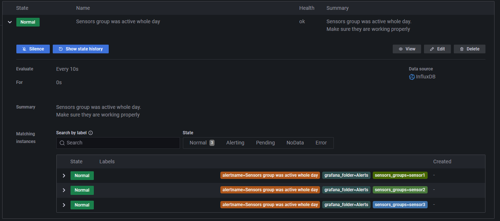
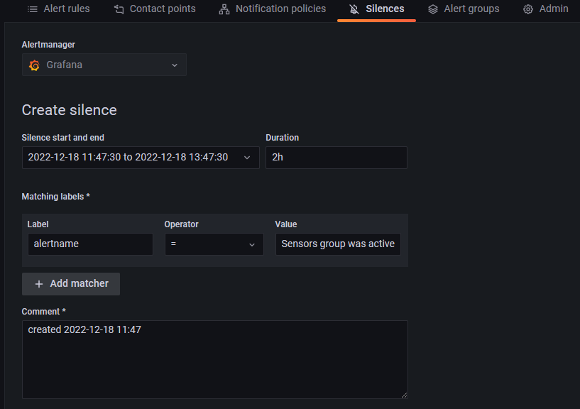

Grafana
Do wizualizacji informacji odnośnie stanu sieci rozważano kilka najpopularniejszych rozwiązań m.in:
-
Power BI - w przypadku którego problemem okazało się odświeżanie danych zaledwie raz dziennie oraz brak wsparcia dla wszystkich źródeł danych używanych w systemie.
-
Kibana - która pomimo posiadania wielu zalet wymagałaby uruchomienia w systemie instancji Elasticsearch oraz nie posiada wbudowanego mechanizmu generowania alertów, co wiązałoby się z konieczności instalacji dodatkowych narzędzi w systemie.
Dlatego też ostatecznie do wizualizacji wykorzystaliśmy narzędzie o nazwie Grafana. Posiada ona wsparcie dla wymaganych źródeł danych, wbudowany system generowania alertów i jest udostępniana na licencji umożliwiającej użycie jej w naszym projekcie bez ponoszenia dodatkowych opłat (Grafana licence)
Stworzona tablica (dashboard) pozwala użytkownikowi sprawdzić podstawowe parametry działania sieci. Posiada ona integrację zarówno z bazą danych InfluxDB, zawierającą informację o dokonanych pomiarach, jak i Postgress, z informacją o urządzeniach w sieci i ich konfiguracji. Jest ona dostępny pod adresem:
lub bezpośrednio z poziomu aplikacji pozwalającej na modyfikowanie ustawień lamp.
Skład przygotowanej tablicy:
Historia aktywności sensorów
Wykres ten zawiera informacje o stanach sensorów (a tym samym lamp) w ciągu ostatnich 7 dni. Na osi x oznaczony został czas, natomiast oś y zawiera poszczególne grupy sensorów. Po wybraniu konkretnego fragmentu wykresu wyświetlana jest szczegółowa informacja na temat czasu, przez jaki grupa sensorów znajdywała się w danym stanie (zarówno sumaryczny czas, jak i dokładna data początku i końca danego stanu). Istnieje możliwość dodania adnotacji do konkretnego fragmentu wykresu.
Zapytanie w języku Flux pobierające odpowiednie dane z bazy InfluxDB:
from(bucket: "IoT")
|> range(start: -7d, stop: now())
|> filter(fn: (r) => r["_measurement"] =~ /sensor*/ and r._field == "is_active")
|> set(key: "_field", value: "status")
Widok historii stanów poszczególnych grup sensorów:
Ustawienia sensorów/lamp
Tabela zawiera informacje na temat ustawień poszczególnych urządzeń w sieci. Pojedynczy wiersz zawiera:
- informacje na temat wartości jednoznacznie identyfikujących dane urządzenie, takich jak ID, UDID oraz adres MAC
- informacje odnoście lokalizacji danego urządzenia (longitude, latitude)
- numer wersji urządzenia
- ustawienia jasności lampy przypisanej do danego urządzenia - wartości do jakich dana lampa się rozjaśnia/przygasza (wraz z wizualną reprezentacją)
- identyfikatora grupy, do której należy dane urządzenie - Device group ID
Zapytanie w języku SQL pobierające odpowiednie dane z bazy Postgress:
SELECT
devices.id,devices.UDID,devices.MAC,devices.longitude,devices.latitude,devices.version_id,groups.configuration -> 'lower_threshold' AS lower_bound, groups.configuration -> 'upper_threshold' AS upper_bound, devices.group_id
FROM devices
INNER JOIN groups ON groups.id=devices.group_id;
Widok tabeli z ustawieniami sensorów/lamp:
Aktualnie aktywne sensory/zapalone latarnie
Miernik (gauge) zawierający informację o stosunku aktywnych urządzeń, do wszystkich urządzeń, jakie obecnie zainstalowane są w sieci, na przestrzeni ostatniej godziny.
Zapytanie w języku Flux pobierające odpowiednie dane z bazy InfluxDB:
from(bucket: "IoT")
|> range(start: -1h, stop: now())
|> filter(fn: (r) => r["_measurement"] == "sensors_stats" or r.field == "active_lanterns_ratio")
|> yield(name: "last")
Widok miernika z procentem aktywnych sensorów:
Ustawienia grupy sensorów
Tabela zawiera informacje o konfiguracji grupy sensorów. Pojedynczy wiersz zawiera:
- ID - jednoznacznie identyfikujące grupę urządzeń
- Description - z opisem dotyczącym danej grupy
- Client ID - identyfikujące klienta, do którego należy dany grupa urządzeń
- ustawienia jasności lamp należących do danej grupy - wartości, do jakich dana grupa lamp się rozjaśnia/przygasza (wraz z wizualną reprezentacją)
- liczba urządzeń w danej grupie
Zapytanie w języku SQL pobierające odpowiednie dane z bazy Postgress:
SELECT
id, description, client_id, groups.configuration -> 'lower_threshold' AS lower_bound, groups.configuration -> 'upper_threshold' AS upper_bound, quantity
FROM groups;
Widok tabeli z ustawieniami grupy sensorów:
Alarmy
Tabela zawiera informacje o alarmach ustawionych w sieci i ich stanach. Dla każdej grupy sensorów znajdującej się w sieci sprawdzamy jej aktywność w ciągu ostatnich 24h. Jeśli sumaryczny czas świecenia lamp w ciągu ostatniej doby wyniósł 24h, to uznajemy, że urządzenie uległo awarii i generujemy adekwatny alarm, który wyświetlany jest klientowi. Jeśli klient uzna, że takie zachowanie jest pożądane, to istnieje możliwość zignorowania takiego alarmu.
Zapytanie w języku Flux pobierające odpowiednie dane z bazy InfluxDB:
from(bucket: "IoT")
|> range(start: -1d, stop: now())
|> filter(fn: (r) => r["_measurement"] =~ /sensor*/ and r._field == "is_active")
|> rename(columns: {_measurement: "sensors_groups"})
Widok stanu alarmów dla wszystkich grup sensorów aktywnych w sieci:
Widok opcji ignorowania danego alarmu: 
Widok ustawień ignorowania danego alarmu (możemy wybrać, że dany alarm jest ignorowany przez określony czas, bo wiemy że np. w tym okresie prowadzone są na nim jakieś naprawy) 
Mapa
Mapa zawiera informacje o lokalizacji każdego sensora w sieci. Po wybraniu konkretnego sensora otrzymujemy informacje:
- o jego współrzędnych geograficznych,
- identyfikatorach urządzenia
- identyfikatora grupy urządzeń
- ustawieniach poziomów jasności lampy
Zapytanie w języku SQL pobierające odpowiednie dane z bazy Postgress:
SELECT
devices.latitude, devices.longitude, devices.id,devices.UDID,devices.MAC, devices.group_id, groups.configuration -> 'lower_threshold' AS brightness_lower_bound, groups.configuration -> 'upper_threshold' AS brightness_upper_bound
FROM devices
INNER JOIN groups ON groups.id=devices.group_id;
Widok mapy:

Ustawienia całej tablicy:
Istnieje możliwość doboru okna czasowego z jakiego wyświetlane są dane na wszystkich wykresach oraz częstotliwości ich odświeżania.
Widok ustawień okna czasowego:

Widok ustawień częstotliwości odświeżania tablicy: